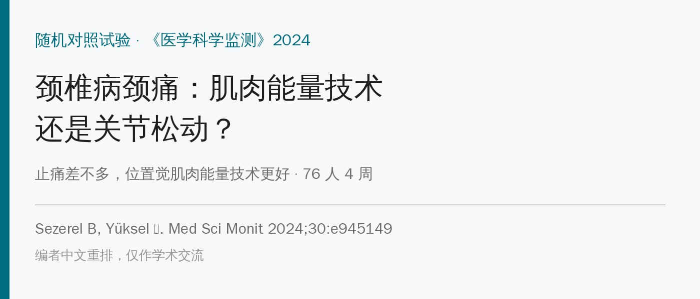
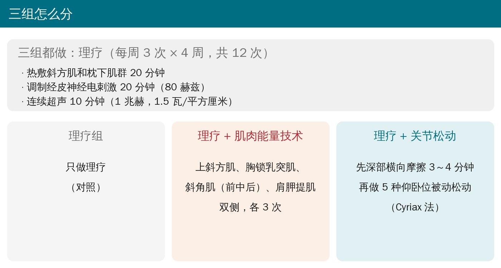
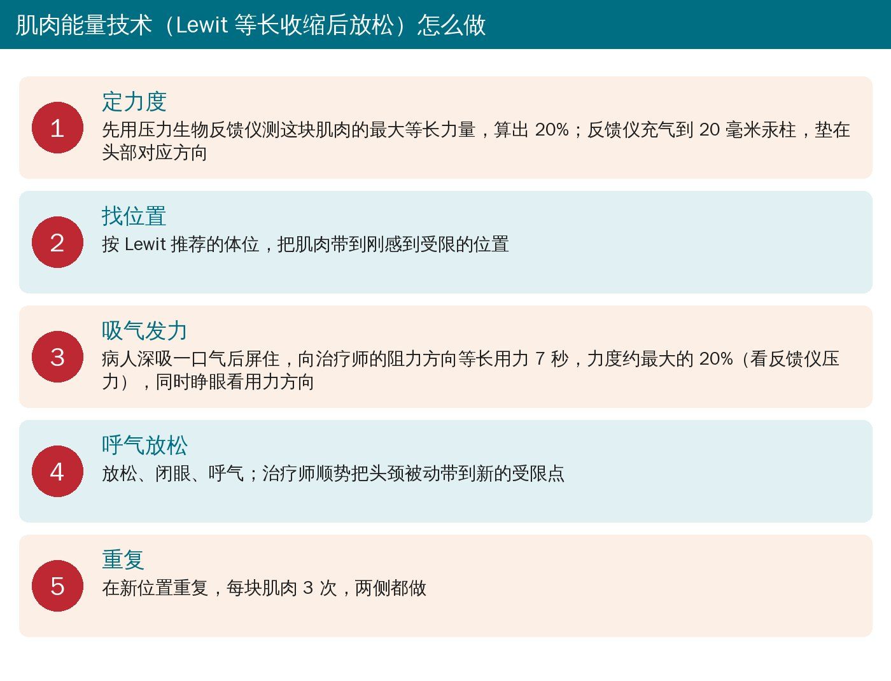
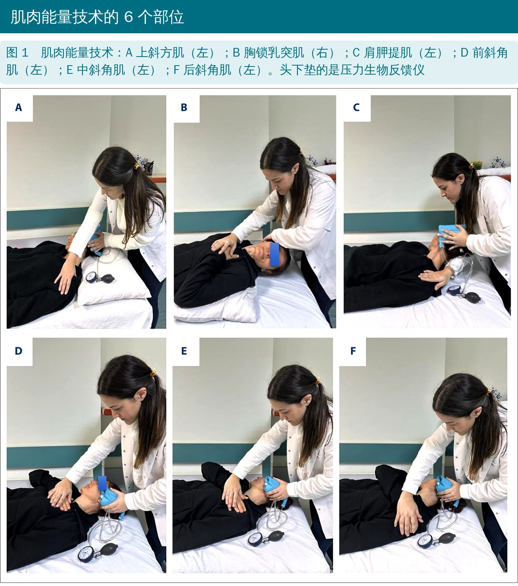
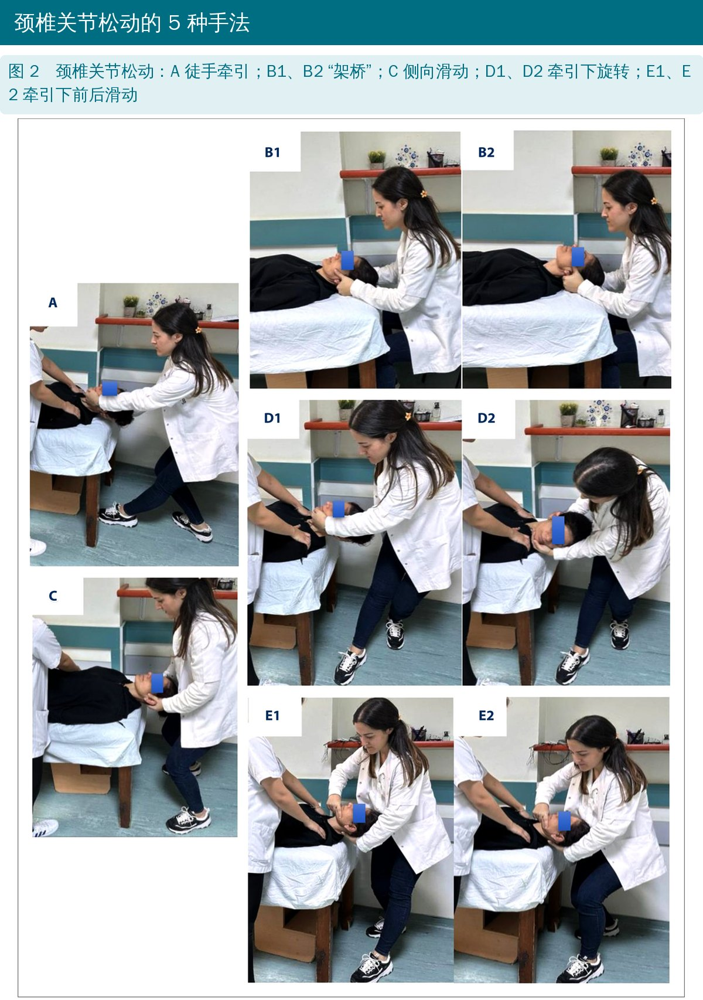
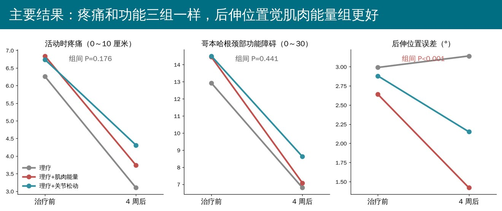
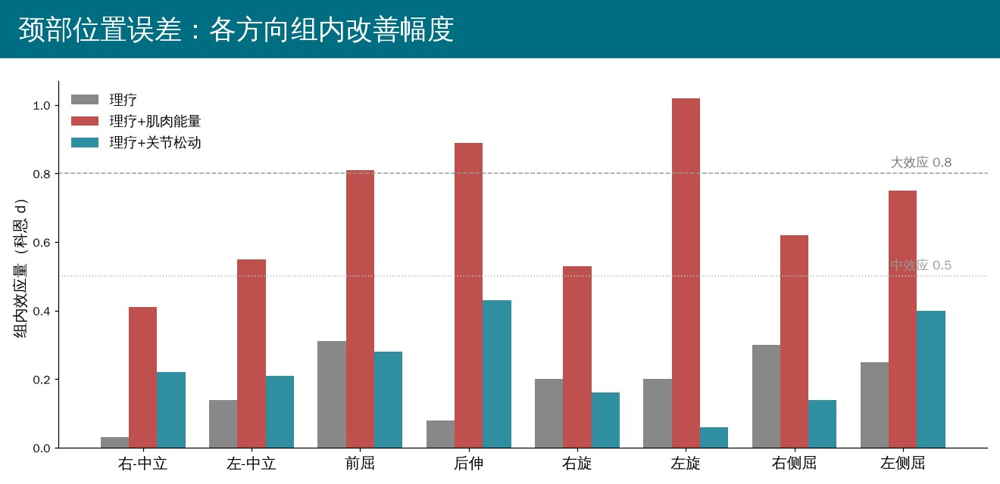

🔖原文信息（编者中文重排）
📚 文献信息
▪ Sezerel B, Yüksel İ. Efficacy comparison of osteopathic muscle energy techniques and cervical mobilization on pain, disability, and proprioception in cervical spondylosis patients. Med Sci Monit. 2024;30:e945149.
▪ 作者来自北塞浦路斯东地中海大学物理治疗与康复系
▪ 三组平行随机对照试验，临床试验注册号 NCT04777318
颈椎病是颈椎的退行性改变，65 岁时几乎人人都有，最常见的表现是慢性颈痛。除了痛，颈部本体感觉（位置觉）变差也常被忽视：头摆到哪儿自己感觉不准，节段稳定性和反射都会受影响，肌肉长时间过度紧张，颈痛也更难好。
手法里，关节松动恢复关节的滑动，肌肉能量技术让病人主动做小力量的等长收缩，再借“收缩后放松”把肌肉带长。两者都被认为能刺激感受器、改善位置觉，但谁更好没人直接比过。
• 对象：40～65 岁、颈痛 > 3 个月、经影像确诊颈椎病，近半年没做过保守治疗；排除上肢放射痛或麻木、颈椎手术、神经系统疾病、肩部问题、正在吃止痛药
• 随机分 3 组各 32 人，最终完成 76 人（理疗 25、理疗 + 肌肉能量 25、理疗 + 关节松动 26）
• 三组都每周 3 次、隔天做，共 4 周 12 次，同一位有 7 年手法经验的治疗师操作和评估
• 结局：静息和活动时疼痛（视觉模拟评分）、哥本哈根颈部功能障碍量表（0～30）；颈部关节位置误差（戴眼罩，用颈椎活动度测量仪测“回到中立位”和“回到目标位”的误差，8 个方向）

🔖三组分组
做 6 个部位：上斜方肌、胸锁乳突肌、前中后斜角肌、肩胛提肌，两侧都做，每块肌肉 3 次。

🔖步骤
• 力度只要 20%：用压力生物反馈仪先测最大力量，再按 20% 控制，靠看压力表确认
• 7 秒等长收缩，配合吸气屏气 + 眼睛看用力方向；放松时呼气 + 闭眼
• 每次放松后，治疗师把头颈带到新的受限点，再做下一次

🔖原文图 1
• 先做椎动脉检查，再在紧张疼痛的颈后肌肉上做深部横向摩擦按摩 3～4 分钟
• 仰卧位 5 种被动松动：徒手牵引、“架桥”、侧向滑动、牵引下旋转、牵引下前后滑动
• 头几次只做“架桥”和牵引，之后再加其余 3 种
• 牵引每次 2～3 秒、重复 3～5 次；时长、频率、进阶按个人调整

🔖原文图 2
热敷斜方肌和枕下肌群 20 分钟；调制经皮神经电刺激 20 分钟（80 赫兹）；连续超声 10 分钟（1 兆赫，1.5 瓦/平方厘米）。

🔖主要结果
• 疼痛和功能：三组都明显下降（P < 0.001），效应量都大；组间没有差别——加不加手法、加哪种，止痛效果差不多
• 位置觉：肌肉能量组 8 个方向的误差全部显著下降；关节松动组只有左侧屈有改善；理疗组都没变
• 组间比较只有后伸有差别：肌肉能量组 2.64 → 1.42°，理疗组 2.99 → 3.14°（P < 0.001）
• 没有人报告不良反应

🔖各方向效应量
• 同一个人既治疗又评估，病人和治疗师都没盲，位置觉测量容易受影响
• 没有随访：只看了 4 周疗程结束时
• 随机后有 15 人在开始治疗前就退出、5 人治疗中退出（约 21%），只分析了完成者
• 关节松动组女性占 88.5%，另两组约 60%～68%，基线不完全可比（P = 0.063）
• 位置觉只有后伸一项组间有差别，8 个方向各比一次、又没做多重比较校正，“肌肉能量技术改善位置觉更好”的结论要打折扣
• 疼痛基线只有约 5～7 分，“理疗就够了”可能和病人整体偏轻有关
原文里对不上的地方：
• 随机方法前后矛盾：一处说“按就诊日期生成随机数的简单随机”，又说由统计师用随机分配软件生成序列、装信封；简单随机也不可能保证“三组各 32 人”
• 方法说视觉模拟评分是 0～100 毫米，表 2 结果却以厘米报告；讨论又拿毫米单位的最小临床重要差异来比
• 统计说数据不符合正态分布、用了非参数检验，但结果全部用均值 ± 标准差报告
• 效应量分级说明“右-中立”是小效应，但 d = 0.41 已接近中效应；结论说肌肉能量技术“在所有方向”都有改善，但组间只有后伸有差别
• 肌肉能量组和关节松动组静息疼痛基线都是 5.69，关节松动组活动痛基线标准差印成“.2.53”
• 胸锁乳突肌拼成“sternocloidomastoideus”；量表缩写一处写成 CFDS
• 颈椎病颈痛，热敷 + 电刺激 + 超声在短期内就能明显减痛；加手法不一定多减痛
• 如果病人有位置觉差、头摆不准，可以试肌肉能量技术：20% 力量、7 秒等长、配合呼吸和眼动，每块肌肉 3 次
• 肌肉能量技术是病人主动参与的方法，可以教给病人在家做，用一个血压计袖带或压力反馈仪控制力度
• 关节松动要先排除禁忌（做椎动脉检查），从牵引和“架桥”开始，再逐步加旋转和滑动
• 评估位置觉不需要昂贵设备：戴眼罩、头顶激光笔对靶，也能做“回到中立位”测试
原文表 1 基线资料
| 变量 | 理疗（25 人） | 理疗 + 肌肉能量（25 人） | 理疗 + 关节松动（26 人） | P 值 |
|---|---|---|---|---|
| 年龄（岁） | 55.48 ± 8.24 | 51.60 ± 7.64 | 50.54 ± 8.43 | 0.068 |
| 体重指数（kg/m²） | 28.47 ± 5.45 | 27.11 ± 4.80 | 28.63 ± 5.93 | 0.741 |
| 病程（月） | 27.80 ± 32.02 | 21.16 ± 25.73 | 32.69 ± 39.41 | 0.358 |
| 性别（男/女） | 10（40%）/15（60%） | 8（32%）/17（68%） | 3（11.5%）/23（88.5%） | 0.063 |
| 利手（右/左） | 25（100%）/0 | 23（92%）/2（8%） | 24（92.3%）/2（7.7%） | 0.192 |
| 利腿（右/左） | 23（92%）/2（8%） | 21（84%）/4（16%） | 23（88.5%）/3（11.5%） | 0.679 |
| 职业：白领 | 10（40%） | 7（28%） | 9（34.6%） | 0.206 |
| 职业：蓝领 | 2（8%） | 9（36%） | 3（11.5%） | |
| 职业：退休 | 6（24%） | 3（12%） | 4（15.4%） | |
| 职业：家庭主妇 | 7（28%） | 6（24%） | 10（38.5%） |
原文表 2 疼痛和功能障碍
| 指标 | 时间 | 理疗 | 理疗 + 肌肉能量 | 理疗 + 关节松动 | 组间 P（治疗时 / 校正后） |
|---|---|---|---|---|---|
| 静息痛（厘米） | 治疗前 | 5.12 ± 2.80 | 5.69 ± 3.06 | 5.69 ± 1.68 | 0.710 / 0.912 |
| 治疗后 | 2.13 ± 2.02 | 2.52 ± 2.53 | 2.35 ± 1.68 | 0.797 | |
| 组内 P；d | < 0.001；1.23 | < 0.001；1.13 | < 0.001；1.99 | ||
| 活动痛（厘米） | 治疗前 | 6.26 ± 2.93 | 6.84 ± 3.14 | 6.74 ± 2.53 | 0.567 / 0.176 |
| 治疗后 | 3.10 ± 2.63 | 3.74 ± 2.63 | 4.31 ± 2.36 | 0.219 | |
| 组内 P；d | < 0.001；1.14 | < 0.001；1.07 | < 0.001；0.99 | ||
| 哥本哈根颈部功能障碍 | 治疗前 | 12.92 ± 7.58 | 14.44 ± 6.81 | 14.50 ± 6.24 | 0.765 / 0.441 |
| 治疗后 | 6.80 ± 6.58 | 7.08 ± 5.01 | 8.62 ± 6.40 | 0.356 | |
| 组内 P；d | < 0.001；0.86 | < 0.001；1.23 | < 0.001；0.93 |
组间 P：治疗前一行为 Kruskal-Wallis 检验 / 非参数协方差分析（Quade 检验）；治疗后一行为 Kruskal-Wallis 检验。组内为 Wilcoxon 符号秩检验；d 为效应量。
原文表 3 关节位置误差（°）
| 方向 | 时间 | 理疗 | 理疗 + 肌肉能量 | 理疗 + 关节松动 | 组间 P |
|---|---|---|---|---|---|
| 右-中立 | 治疗前 | 4.79 ± 3.19 | 4.17 ± 3.49 | 3.79 ± 3.20 | 0.407 / 0.092 |
| 治疗后 | 4.66 ± 4.27 | 2.69 ± 3.71 | 3.10 ± 2.79 | 0.133 | |
| 组内 P；d | 0.192；0.03 | 0.005；0.41 | 0.071；0.22 | ||
| 左-中立 | 治疗前 | 7.15 ± 6.84 | 5.12 ± 4.36 | 4.74 ± 3.59 | 0.467 / 0.055 |
| 治疗后 | 6.21 ± 5.91 | 2.88 ± 3.75 | 3.97 ± 3.76 | 0.061 | |
| 组内 P；d | 0.161；0.14 | 0.001；0.55 | 0.148；0.21 | ||
| 前屈 | 治疗前 | 3.12 ± 2.93 | 3.57 ± 2.49 | 3.41 ± 2.59 | 0.568 / 0.116 |
| 治疗后 | 2.36 ± 1.66 | 1.86 ± 1.61 | 2.73 ± 2.22 | 0.213 | |
| 组内 P；d | 0.139；0.31 | 0.003；0.81 | 0.172；0.28 | ||
| 后伸 | 治疗前 | 2.99 ± 2.04 | 2.64 ± 1.56 | 2.88 ± 2.18 | 0.843 / < 0.001 |
| 治疗后 | 3.14 ± 1.87 ᵃ | 1.42 ± 1.17 ᵇ | 2.15 ± 1.02 | < 0.001 | |
| 组内 P；d | 0.572；0.08 | 0.004；0.89 | 0.143；0.43 | ||
| 右旋 | 治疗前 | 3.39 ± 2.36 | 3.86 ± 2.78 | 3.79 ± 2.81 | 0.935 / 0.243 |
| 治疗后 | 2.93 ± 2.12 | 2.55 ± 2.11 | 3.36 ± 1.97 | 0.295 | |
| 组内 P；d | 0.372；0.20 | 0.011；0.53 | 0.352；0.16 | ||
| 左旋 | 治疗前 | 3.06 ± 1.74 | 4.48 ± 2.85 | 2.88 ± 1.84 | 0.096 / 0.482 |
| 治疗后 | 2.66 ± 2.29 | 2.21 ± 1.33 | 2.75 ± 2.15 | 0.783 | |
| 组内 P；d | 0.365；0.20 | 0.002；1.02 | 0.909；0.06 | ||
| 右侧屈 | 治疗前 | 3.44 ± 3.37 | 2.36 ± 1.90 | 2.34 ± 1.67 | 0.612 / 0.132 |
| 治疗后 | 2.52 ± 2.55 | 1.36 ± 1.27 | 2.11 ± 1.67 | 0.135 | |
| 组内 P；d | 0.115；0.30 | 0.010；0.62 | 0.442；0.14 | ||
| 左侧屈 | 治疗前 | 2.21 ± 1.66 | 2.06 ± 1.37 | 2.75 ± 1.72 | 0.218 / 0.450 |
| 治疗后 | 1.81 ± 1.50 | 1.17 ± 0.95 | 1.96 ± 2.17 | 0.367 | |
| 组内 P；d | 0.135；0.25 | 0.011；0.75 | 0.046；0.40 |
ᵃ、ᵇ：字母不同表示组间有显著差异。
欢迎关注悦美力公众号，获取更多物理治疗的专业知识！
📄参考文献：
Sezerel B, Yüksel İ. Efficacy comparison of osteopathic muscle energy techniques and cervical mobilization on pain, disability, and proprioception in cervical spondylosis patients. Med Sci Monit. 2024;30:e945149. doi:10.12659/MSM.945149
原文以知识共享署名—非商业性使用—禁止演绎 4.0 协议（CC BY-NC-ND 4.0）发表。本文为非商业学术交流用的中文解读，照片引自原文图 1、2（编者加中文图注），分组卡、步骤卡与结果图为编者中文绘制，表格为编者翻译，如有侵权请联系删除。